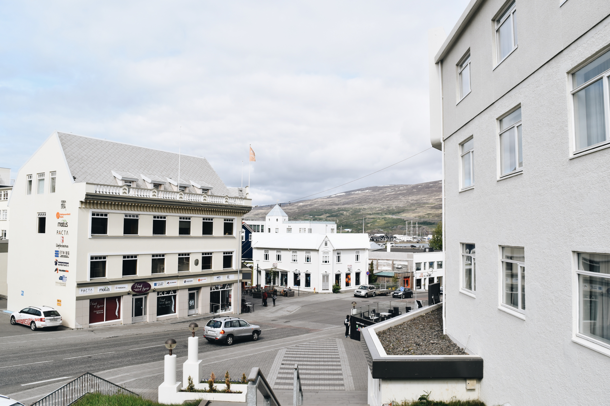
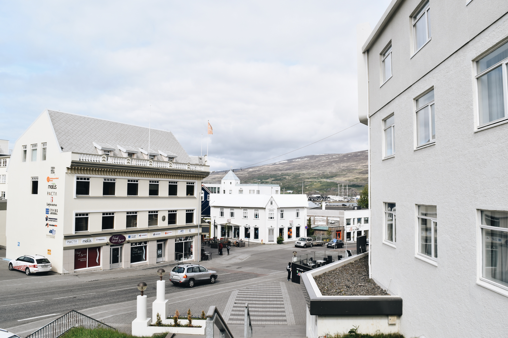
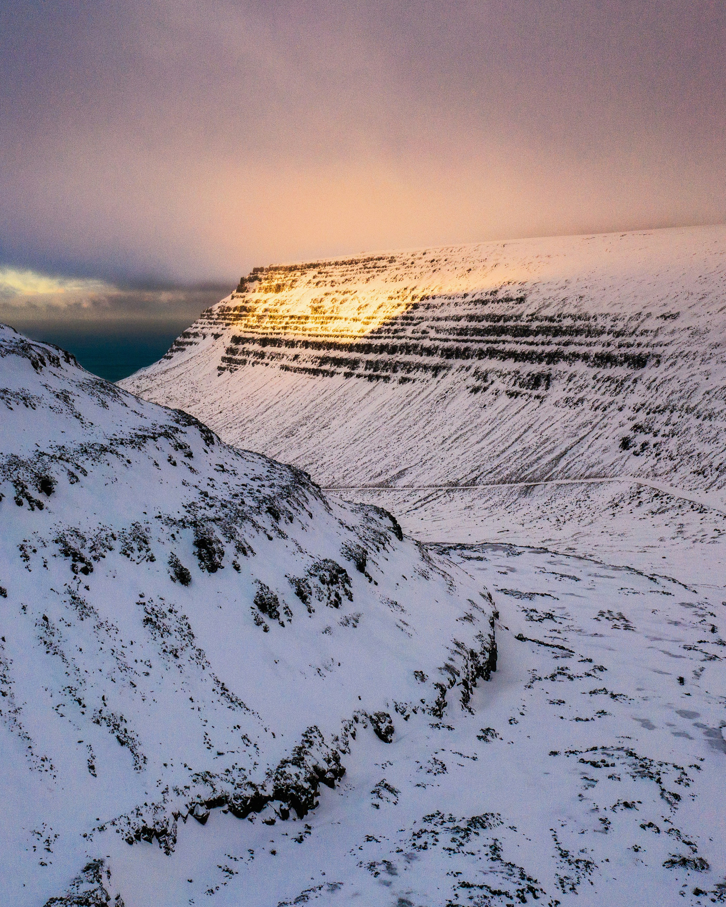
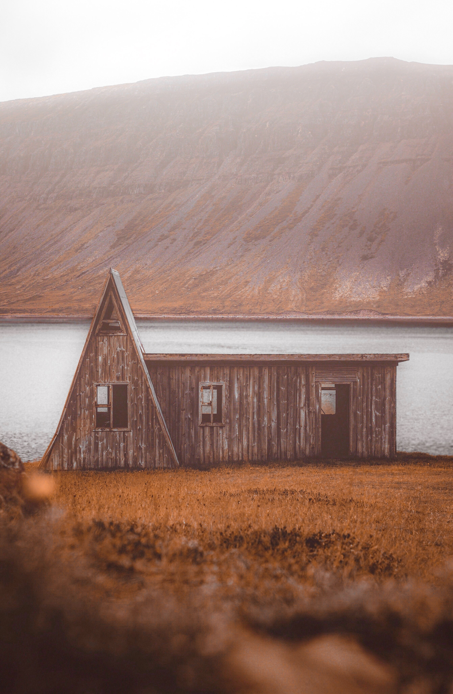
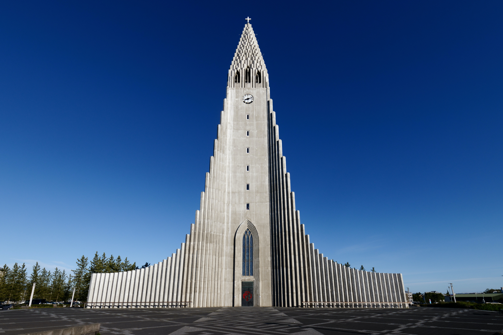
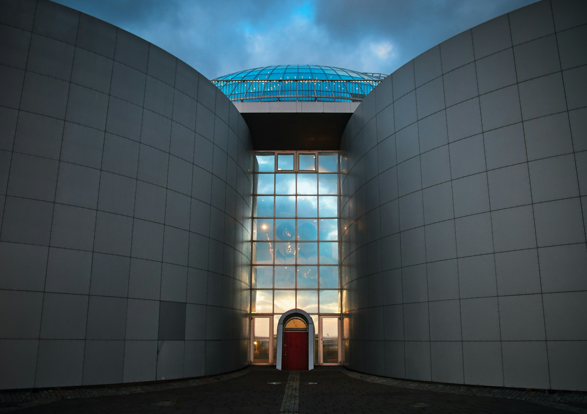
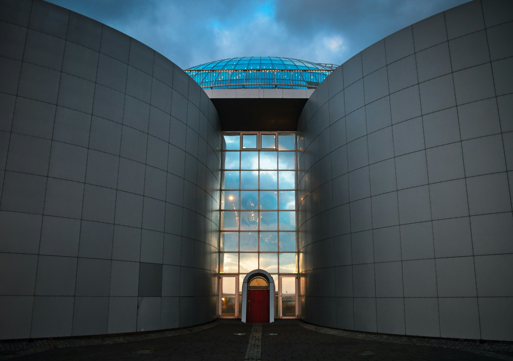

| Ville | Superficie | Population | Gallerie |
|---|---|---|---|
| Akureyri | 138 km² | 18 191 inhabitants |
 


|
| Ísafjörður | 227 km² | 2,600 inhabitants |



|
| Reykjavik | 273 km² | 122 853 inhabitants |

 

|